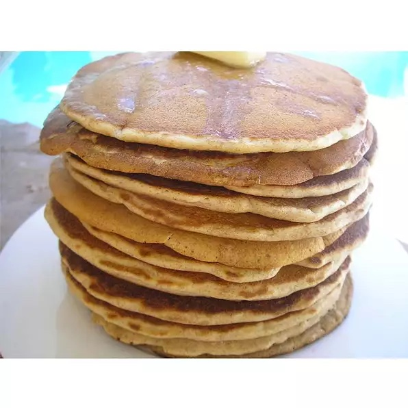

Whole wheat Pancake mix

Description
This is a bulk whole wheat pancake mix recipe that my family loves, and it is very easy to make!
It also makes good waffles.
Ingredients
- 5 cups whole wheat flour
- 3 cups unbleached all-purpose flour
- ½ cup white sugar
- 2½ tablespoons baking powder
- 4 teaspoons baking soda
- 4 teaspoons salt
Steps
- Whisk whole wheat flour, all-purpose flour, sugar, baking powder, baking soda, and salt together in a bowl
- Cook on a hot griddle and serve with your choice of toppings.